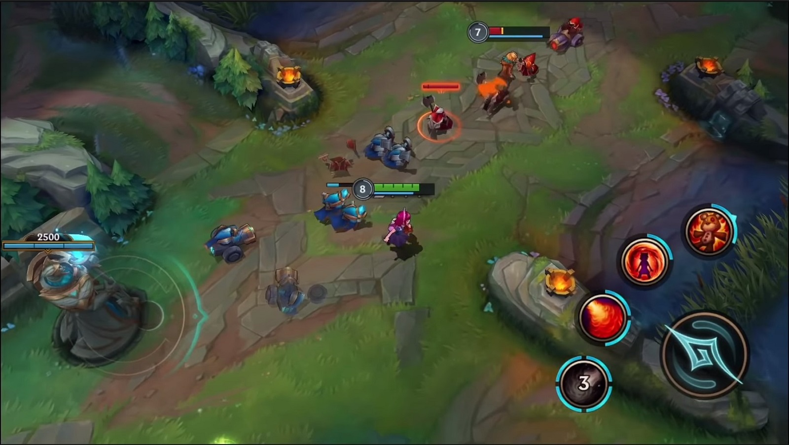
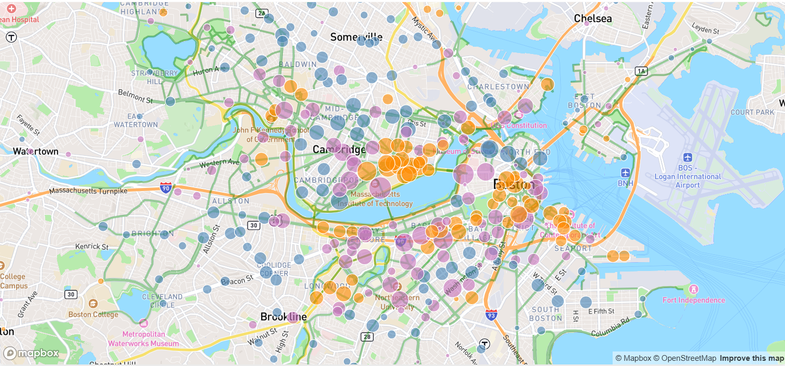
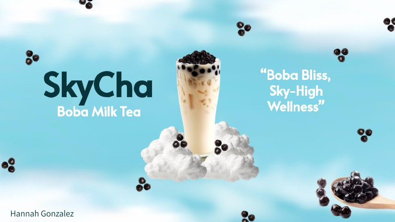
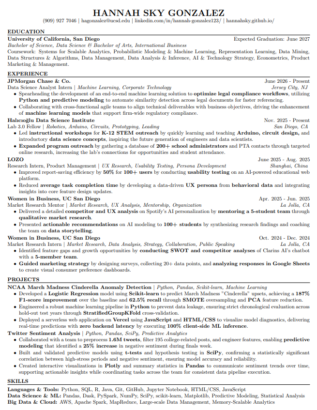

Hi, I'm Hannah Sky Gonzalez! I'm a third year Data Science and International Business double major at UC San Diego. As a double major, I've developed a passion for connecting data to real-world applications. When it comes to data science, I use my expertise to follow my curiosity, creating data science questions and taking them from a question to a solution that connects to impact. On campus, I'm involved with Women in Business, where I am a proud Latina in Tech, and work at a Data Science lab where I help inspire future engineers by teaching K-12 students. I focus my work on mentorship and giving back to my community. For me, trying new things is hard, but I enjoy putting myself in difficult situations. As someone who interned in China, I learned to adapt to my surroundings and how to live in a different culture. Overall, my experiences have prepared me for whatever comes next.
Outside of my studies, I'm usually traveling to new countries, grabbing a matcha, or watching basketball. I probably already heard of the latest matcha cafe in the area. I'm a huge fan of college ball and March Madness. I've always been high energy, but I'm also observant when it comes to the strategy behind the plays. I believe the best insights come from having a mix of different experiences and perspectives. Ultimately, I love to explore, observe, and learn.
Developed a Logistic Regression model to predict March Madness "Cinderella" upsets, achieving a 187% F1-score improvement over the baseline through SMOTE oversampling and PCA feature reduction.

Developed a Random Forest Classifier using Scikit-learn to predict player positions across 19,692 rows and 161 features, achieving 77.3% accuracy and improving baseline performance by 4%.
Developed a Logistic Regression model using Scikit-learn to predict March Madness "Cinderella" upsets, achieving a 187% F1-score improvement over the baseline and 62.5% recall through SMOTE oversampling and PCA feature reduction.
Engineered a robust machine learning pipeline in Python to prevent data leakage, ensuring strict chronological evaluation across hold-out test years through StratifiedGroupKFold cross-validation.
Deployed a serverless web application on Vercel using JavaScript and HTML/CSS to visualize model diagnostics, delivering real-time predictions with zero backend latency by executing 100% client-side ML inference.
Collaborated with a team to preprocess 1.6M tweets, filter 195 college-related posts, and engineer features, enabling predictive modeling that identified a 25% increase in negative sentiment during finals week.
Built and validated predictive models using t-tests and hypothesis testing in SciPy, confirming a statistically significant correlation between high-stress periods and negative sentiment.
Created interactive visualizations in Plotly and summary statistics in Pandas to communicate sentiment trends over time.
Developed a Random Forest Classifier using Scikit-learn to predict player positions across 19,692 rows and 161 features, achieving 77.3% accuracy and improving baseline performance by 4%.
Applied statistical hypothesis testing and fairness analysis (p = 0.056) to validate unbiased model performance.
Executed a full end-to-end data modeling pipeline including preprocessing, EDA, and feature scaling; utilized Matplotlib to visualize relationships between variables.

Created an interactive geospatial visualization of Bluebikes traffic in Boston/Cambridge using Mapbox GL JS for the basemap and D3.js for custom overlays, integrating bike lane data and over 260,000 trip records.
Used a D3 Square Root Scale to accurately size station markers based on total traffic volume and implemented a reactive time slider for temporal data filtering.

Led the development of a product launch plan for SkyChaa, conducting comprehensive competitor and market analyses to identify opportunities and gaps.
Performed customer segmentation and target market profiling to tailor marketing strategies, and developed actionable recommendations to optimize product positioning, adoption, and overall launch success.
Developed predictive models for San Diego's MTS system to forecast bus wait times using historical data, improving insights into service efficiency.
Created comprehensive visualizations, including a county-wide map of all bus lines, to communicate patterns and support data-driven planning for transit operations.
Double major with coursework in data science, machine learning, business strategy, accounting, and international business. Active in Data Science Society, Women in Business, and Women in Computing.
